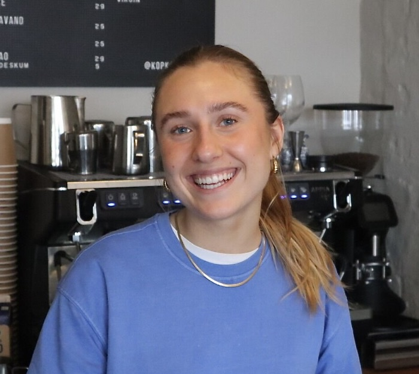
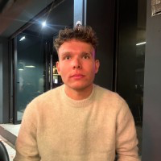
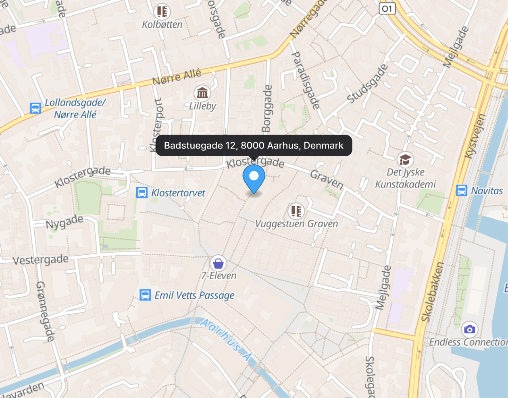
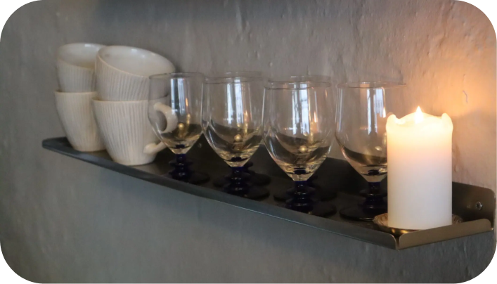
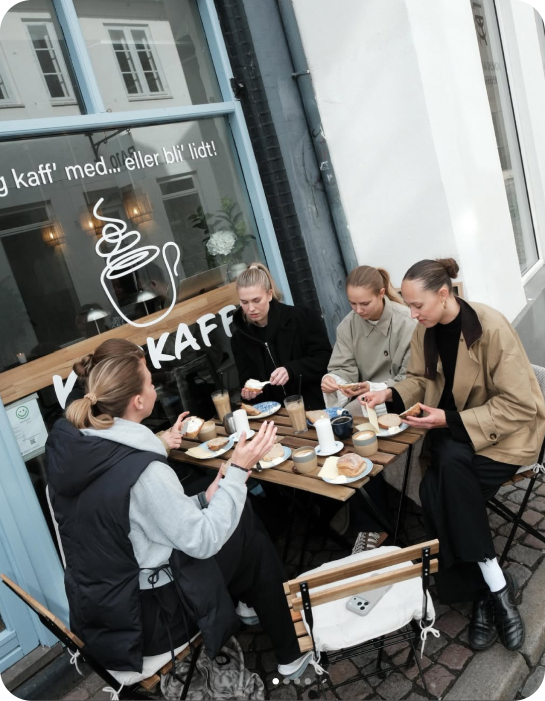
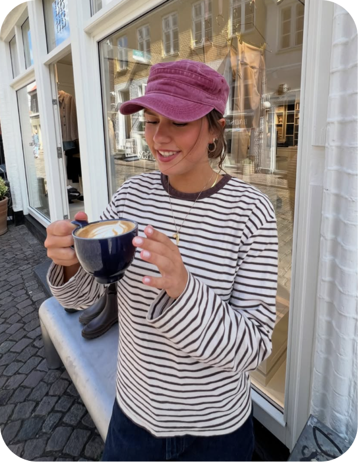

About KopKaff'
It all started with a dream...
Emma and Noah are the co-owners of KopKaff, cousins who took on the role of being business owners at the very young age of 22. Both of them being what we call "Arhusiansk", the people of Aarhus born and Aarhus living. Being "Arhusiansk" is a big part of the co-owners as well as it being one of the important feelings and points that Emma and Noah wanted to bring into KopKaff.
So how did KopKaff actually come to life? It wasn't born in a boring corporate boardroom, that's for sure. It started with endless late night chats, way too many shots of espresso, and a shared mission to build the ultimate cozy hangout spot in the heart of Aarhus. Emma brought the design eye and the perfect playlist vibes, while Noah mastered the art of the flawless latte pour.
But here is the best part: Emma and Noah know exactly what it's like to be 22 and living on a tight budget. That is why they made a golden rule for KopKaff, amazing coffee shouldn't cost a fortune. By keeping their drinks super cheap and student friendly, they made sure KopKaff isn't just a luxury treat, but a daily go-to spot for everyone in Aarhus.

Emma Svanholm, 22, co-owner

Noah Svanholm, 22, co-owner
Location

Latinerkvarteret
Badstuegade 12, 8000 Aarhus, Denmark
Contacts
Instagram: kopkaff
Facebook: Kopkaff
TikTok: @kopkaff0
Tel. 93 93 68 91
mail@kopkaff.dk
Opening Hours
| Monday | 7:30 - 16:30 |
| Tuesday | 7:30 - 16:30 |
| Wednesday | 7:30 - 16:30 |
| Thursday | 7:30 - 16:30 |
| Friday | 7:30 - 18:00 |
| Saturday | 8:45 - 18:00 |
| Sunday | 8:45 - 16:30 |
Photos


